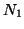
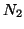

This option is supposed to control extrapolation of the tip force - not yet implemented. The first parameter is F (do not apply) or T (do apply extrapolation mechanism to the tip force), then the order of a polynomial

to be used for the extrapolation, and , finally, the number of points
.
Example: Fextrapolate{F/T,polyn,points} T 2 3